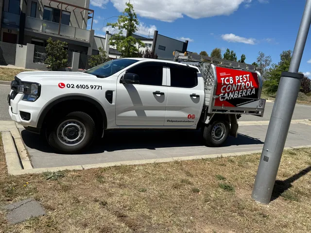

Pest control across the ACT.
Family-run, fully licensed and ACT-wide — covering twelve districts from Belconnen to Tuggeranong, Woden to Molonglo Valley, plus Queanbeyan and Jerrabomberra. Same-week availability and a written quote on every job.
The whole ACT, mapped.
Twelve districts, one local team. Landscaped suburban blocks, established family homes, dense inner-city terraces, light industrial and river-adjacent estates — covered weekly by TCB technicians who actually know the area.
Belconnen
Webbing spiders and redbacks on suburban blocks.
Gungahlin
Established gardens, heritage homes and termite risk.
Tuggeranong
Established suburbs and large blocks with termite risk.
Woden Valley
Family homes and strata units near the Woden town centre.
Inner North
Heritage homes, dense terraces and inner-north gardens.
Inner South
Multi-unit dwellings and dense inner-south terraces.
Molonglo Valley
Newer estates with high termite exposure.
Weston Creek
Established suburb with mature trees and roof rats.
Canberra City
CBD offices, hospitality and adjacent residential.
Queanbeyan
Bordered by the river — close working with Queanbeyan-Palerang council area.
Jerrabomberra
River-adjacent suburb with active bird and rodent pressure.
Fyshwick
Light industrial — bird, rodent and stored-product pest management.
Local technicians.
Local knowledge.
A Belconnen block sees very different pest pressure to a Tuggeranong estate, a Woden strata unit, or a Queanbeyan river-block home. Our technicians live and work in the ACT — they know which species are active where, what time of year each one peaks, and the safest way to treat the building type in front of them.
- Funnel-webs along the Molonglo and Cotter corridors, and in established Belconnen and Weston Creek gardens.
- White-tails and redbacks in inner-north and inner-south subfloor spaces and shaded sub-floor entries.
- Subterranean termite species most active on Tuggeranong, Woden and Molonglo Valley fill soils — Termidor accredited protection available across the ACT.
- Roof rats in mature Weston Creek trees and older Inner South roofs; mice pressure through winter in Queanbeyan and Jerrabomberra.

The same TCB service, in every district.
Residential
General pest treatment for the species that turn up in and around the house — family-safe product and a written report after every visit.
Commercial
Discreet, compliant pest control for offices, retail, hospitality, schools and strata across the ACT and surrounds.
Termites
Termidor-accredited inspections, treatment and ongoing protection — with a written quote on every job.
Pests We Treat
Ants, spiders, cockroaches, rodents, wasps, bees, silverfish, moths, fleas, bed bugs and more across the ACT.

Same-week bookings
across the ACT.
Twelve ACT districts on a single weekly roster — Belconnen, Gungahlin, Tuggeranong, Woden, the Inner North and South, Molonglo Valley, Weston Creek, Canberra City, plus Queanbeyan, Jerrabomberra and Fyshwick. One call, one service-vehicle network, one written report.
Find your suburb.
Book a visit.
Tell us your suburb and the pest problem. We'll get back within one business day with a written quote and the next available visit. Family-run, fully licensed, family-safe product on every job — across the ACT.